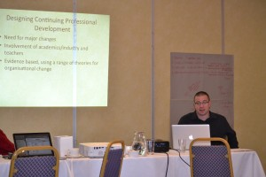
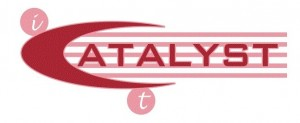
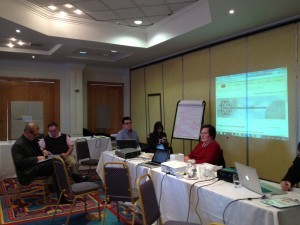
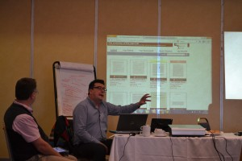

MirandaNet is a community of educators who are curating our collaborative thinking under themes that have been identified so that colleagues can trace how the community has developed key ideas over time. There is no limit to this collaborative process, but it is important that from time to time we communicate our ideas to policy makers, the profession and the research world. We do this through our events and in our publications that come in many forms: academic publications, articles for professional journals, newspapers and contributions to relevant consultations.
The progress of our professional thinking can be traced through articles listed below.
There are four kinds of articles in this section of the website that represent MirandaNet members thinking on a range of issues:
- digests of debates on mirandalink that is a membership online debating service;
- articles based on MirandaNet expertise and opinions offered at unconference events;
- articles based on the resources developed from innovative virtual communication events called MirandaMods;
- comments on Computing debates that emerge in the news;
- the MirandaNet newsletters.
We are gradually curating these for the new MirandaNet website that is planned for January 2015 here. Meanwhile you can gain a flavour what the new resource will have to offer as some of the latest articles are below:
- Does research really have any measurable impact on teaching practice?
- A political attack on academics and teachers in the UK
- Developing effective professional communication models using technology
- Is there really an alternative to Powerpoint?
- Continuing Professional Development: multimedia resources and training for teachers
- Continuing Professional Development: multimedia resources and training for teachers
- An ICT curriculum for the Knowledge Age
- Can schools throw out their computers now that the ICT Curriculum is being threatened with disapplication?
- Theories of learning underpinning digital technologies in education
- Exploring Education Future
Opinion Pieces
Laurillard, D (2014) Hits and Myths: Moocs may be a wonderful idea but they are not viable. The Times Education Supplement January 16th. Download here Laurillard_THE_JAN1614.pdf
Preston C (2013). Critical Perspective: Re-engineering the ICT profession ACM InRoads Paving the way to excellence in Computing June 2013 | Volume 4, No. 2 ACM
Articles
1. Does research really have any measurable impact on teaching practice?
The closing of Becta, the UK ICT government agency, by the new Coalition government in 2009, also resulted in the wiping of research findings that had been built up over the last twenty years, paid for by the tax payers. Attempts are being made to restore some of these findings on independently owned websites like MESH and as part of this process MirandaNet Fellows were asked:
- Where do you look for credible research?
- Where do you expect research funding to come from in the next 10 years
- What research questions would you like answered in your current situation.
2. A political attack on academics and teachers in the UK
Educators and academics may not have the longevity of the British Queen, but nevertheless professionals in education have more longevity than governments and, therefore, are likely to have more knowledge about education than merely having attended a school in their youth. In the century of the internet, we now have evidence that professionals should not be dependent on political favour to maintain repositories of research findings and resources that, in the long terms can have global impact on educational achievement.
In this context, Professors Marilyn Leask and Christina Preston have just returned from a speaking tour of Australia and New Zealand universities building up support for Re-engineering the profession: call for collective action. Underlying this initiative is a concern about recent attacks on academics and their respositories of knowledge.
MirandaNet has been involved recently in the consultations about the ICT curriculum which the Coalition government are threatening to change to two thirds coding without the agreement of the main professional bodies: ITTE, Naace and MirandaNet.
The attempts to by-pass professional opinion about the ICT curriculum is one aspect of an more wide reaching attack on academics and teachers that the Coalition has mounted. In one attack, Micheal Gove, the UK Secretary of State for Education, and ex-journalist, is clearly not expecting to win teachers’ votes with his polemic published in the Mail on Sunday, a right wing tabloid:
I refuse to surrender to the Marxist teachers hell-bent on destroying our schools: Education Secretary berates ‘the new enemies of promise’ for opposing his plans.
Next we have the Chief Inspector of OFSTED, Michael Wilshaw’s comments about the letter, signed by 100 UCET academics, criticising his reforms. Apart from the fact that the Chief Inspector should be impartial, Michael Wilshaw shows a lack of understanding of teacher educators’ partnerships with schools by calling on them to come out of their ‘ivory towers’. This is a strange attack on academics from an ex-head teacher who thought that the most important achievement of the school he ran in a disadvantaged London community was that a few pupils won places at Oxbridge. He says all pupils should aspire to this level of academic excellence and yet criticises academics if they do not agree with his approach. Isn’t the point of creating academics an effort to create more intelligent thinkers in a democracy?
Firstly the way in which the new ICT curriculum has been designed in England is a concern in terms of wider issues about the preservation of democracy processes and regard for professionalism. For example, government websites holding many years of resources and research developed by professionals have been closed down by the Coalition. For example, Becta, the government agency for digital technologies in education, funded a huge variety of publications developed by teachers and teacher educators. These publications can no longer be accessed as in 2010 when they were elected, the Coalition closed all the government websites including Becta’s research and professional development publications, the Teacher Training Agency ICT resource bank for teachers and Teachers’ TV. A huge repository of resources, advice and evidence has been destroyed.
But developing collaborative strategies for building knowledge has also resulted in strategies for influencing government policy by strengthening professional judgment with ‘crowd sourced’ evidence. So far teachers and academics have not been good at publishing evidence in a single place as doctors have. The successful model used in the medical field, The Cochrane review, already adopts the ideas of knowledge management to the managing and building of knowledge which is scaled up by the submission of small scale studies that are analysed to achieve a wider consensus on what works and what does not work. The intention is that learner attainment will be raised by professionalizing teaching.
Independent global ownership by universities of the platform means that the teaching profession and the associated academics do not have to trust the continued funding of government websites when the political regimes change drastically and education becomes a political football. From this starting point an international community of communities has been established, the Education Futures Collaboration, based at the University of Bedfordshire. This independent organisation is for global educators, teachers and academics as well as companies, who wish to work collaboratively to improve the quality of education and make sure that knowledge is disseminated. The ideas, values and work strands underpinning the Education Futures Collaboration have been evolving for many years through the professional interests and work of a number of founding members. The Royal Academy of Engineers, the British Computer Society and teachers from Computers in Schools who have been advising the Coalition are also be invited to add pathways from their research and knowledge about Computing Science.
Read more about Miranda’s involvement in the Education Futures Collaboration here.
Read more about the Gove article.
Read more about the Wilshaw article.
3. Developing effective professional communication models using technology
Digital Approaches to informal Building and Sharing Professional Knowledge
Contributions coordinated by Fellows: Dewi Lloyd (Iris Connect), Matthew Pearson and Rachel Jones (Steljes), Roger Turner (Light Speed) and Katya Toneva (St Mary’s).
Professional Development needs to change radically to meet the needs and challenges of the digital age. We now have very powerful tools at our disposal for sharing professional knowledge in new ways, and the challenges to all, especially academics and policy makers, is to develop ways of harnessing this potential so that impacts on practice are maximized and a real culture of innovation and creativity is fostered amongst teachers. Read more…
4. Is there really an alternative to Powerpoint?
December 2011
Of course it is not that simple – although some excellent alternatives to Powerpoint have been offered in the mirandalink debate about effective presentations: Prezi, Keynote, Articulate Studio, Xerte, Timtoast.com, Google Earth and Sketchup and others…as well as some warnings about them all – as Chris Yapp said it depends on what you want to do. Read more…
5. Continuing Professional Development: multimedia resources and training for teachers
Continuing Professional Development in ICT
Contributions coordinated by Fellows: Dewi Lloyd (Iris Connect), Matthew Pearson and Rachel Jones (Steljes), Roger Turner (Light Speed) and Katya Toneva (St Mary’s). November 2012
The challenges to teacher professional development that will arise in the next 5 to 10 years are considerable, yet the opportunities to transform practice and create a generation of teachers delivering a world class ICT curriculum are within our grasp. Innovations in ICT and the exponential growth of the digital world will not patiently wait for educators to catch up and implement change at their own pace. Rather than a programme that is built on gradual and incremental improvements to existing practice, we need to embrace methodologies for CPD in ICT that move practice on at a much greater pace. Read more…
6. What does the 21st century teacher need to know?
From Prague 2013
At the MirandaNet conference in Prague 2012 a key consideration raised by this international group was the kind of model of continuing development that was most appropriate for professionals in education. on of the partcipants, Gareth Meed, a deputy head teacher in a large primary school in a challenging urban area of Bradford, UK, looked more closely at how the curriculum for teachers should be organized, “If an educator is to be effective in the development of learning then the questions may be: firstly, is knowledge about digital technologies sufficient in itself ?; and, secondly, what kind of educator or what pedagogy is needed to use these technologies most effectively?
Jan Lepeltak, journalist, educator and researcher joined the debate saying: “The challenge I see is: how can we use ICT to enhance ‘traditional’ skills and stimulate deep-learning?” Read more…
The iCatalyst programme: innovative professional development

Based on MirandaNet research, Fellows have devised iCatalyst, an an innovative Continuing Professional Development (CPD) programme that is relevant to the whole workforce. MirandaNet Fellows have undertaken research into CPD in digital technologies since 2004 particularly focusing on educators who want to take ownership of change through action research and collaborative decision making.
Bespoke course can be run as one day events or modules that last one term or one year. Modules can be linked together if required to do a Masters or a Ph.D. This way of working is particularly valuable in helping a group of professionals to reflect on changes that they wish to make to their working practices. Members of the group can make different decisions about whether they want to work towards accreditation or not. If they decide on accreditation they are mentored in deciding the level of accreditation that will be most appropriate. Read more…
7. An ICT curriculum for the Knowledge Age
Miranda’s ICT curriculum
From the Exploring Education Futures Conference at Bedford November 2013
Christina Preston, Theo Kuechel, Ian Lynch, Gebol, Iris Lanny-Oracle, Carsten Trinitis- University of Munich and Andrea Forbes, Gareth Lee, Omnisoft, Texas Instruments, Gerlinde Gniewosz, KO-SU.
The draft programmes of study
While the draft programme of study produced by The British Computer Society and the Royal Academy of Engineering is a good starting point, we have identified the following weaknesses.
Too much space (about 50%) is taken up with purpose, aims and definitions.
Inconsistency in the use of language and the detail presented in different parts of the text.
Progression routes between key stages lack sufficient clarity to be maximally useful to teachers.Some language is not helpful to a general readership. It is not always well matched to the level associated with the content and could therefore be misleading.
The lack of reference to assessment sends the wrong signals in terms of professional rigour. We do not need to be prescriptive about assessment methods but we do need to ensure that regular assessment takes place since it is an essential element in any teaching strategy to raise standards.We propose the following redraft. This concise, consistent and balanced version gives a clearer steer on progression and takes account of evidence of age related cognitive development. We do not think this redraft changes the overall statement of what good teaching in the field should be about, but presents the information in language that more educators will be familiar with. Read more…
You can read more about the UK ICT consultation here.
Dr Noeline Wright has commended from the perspective of New Zealand here
8. Can schools throw out their computers now that the ICT Curriculum is being threatened with disapplication?
Unexpected results from consultation
Regional advisers and school cluster trainers in Information and Communications Technology (ICT) have been disappearing since the Coalition took over in the UK two years ago. But now there are indications that some teachers of ICT in schools will lose their jobs at the end of this academic year. The reason is that in his address to BETT12 in January, Michael Gove set up the consultation about the disapplication of the ICT curriculum. If disapplication goes through in September it will mean that heads no longer have to be accountable to Ofsted for the use of digital technologies in teaching and learning in their schools. Some heads are already taking advantage of the apparent lack of political support to economise on ICT provision. The danger is that if a new ICT curriculum is agreed there will be few staff trainers, advisers and commercial providers left to deliver it. Meanwhile master level course in universities are seriously threatened by the move to school based training. Read more…
Sustaining collaborative professional learning and research through technology
At the Exploring Education Futures unconference, one working party in partnership with Education Futures Collaboration, was discussing how to solve a problem that affects academics and professionals all over the world: Why aren’t policy and practice in the education professions underpinned by an agreed body of research based evidence? Probably because teaching and learning are among the most complex of all human activities and probably not because of lack of original, rigorous and significant research work across the discipline of education.
So, what to do?
In the UK, building and making accessible a reliable database of evidence-based research has strengthened policy and practice in the medical and health professions through such collaborations as the Map of Medical Healthguides and the National Institute for Health and Clinical Excellence (NICE).
Improving education systems in a similar way has proved to be an elusive goal across the globe. In its 2009 report[1] the OECD calls for the creation of knowledge-rich, evidence-based systems to empower educational leaders and teachers with the knowledge needed to transform models of schooling. Read more…
Each of the members was awarded a Fellowship for their contribution to the publications from this group that can be found here. The authors were: Professor Marilyn Leask, Dr Sarah Younie, Dr Sean McCusker, Kevin Burden, Graham Newell, Iris, Dr Andrea Raiker, Dr Noeline Wright, Gerlinde Gniewosz, KO-SU.
9. Theories of learning underpinning digital technologies in education
Dr Andrea Raiker has co-ordinated this group who have published a book chapter and have another paper under peer reviewed. This research has been following the MirandaNet group activities in order to see how collaborative professional learning might be scaffolded by tutors. She summarises this group’s research ‘into whether, in the current political climate, teachers could “organise themselves as communities of enquirers, organising their own enlightenment” through a blended physical and virtual environment’ . She asks whether this ‘enlightenment’ would have the potential to influence policy?’ and explains how mind mapping software was used as a means of mediating language misinterpretations, misunderstandings and supporting knowledge transfer. Read more….
10. Exploring Education Futures
MirandaMod collaboration
In order to achieve collaboration across national and cultural boundaries Fellows have invented an innovative form of unconferenc, a MirandaMod, where the debate of participants face to face is video-streamed to members in 80 countries. Remote participants can engage though five streams: Twitter, Flash meeting and remotely authored digital mind maps. All these streams provide resources for those who want to study the proceedings later. Our aim is to use this form of publication to draw attention to research findings and professional expertise to use in influencing policy makers at local, national and international levels.
The four broad themes that emerged from this collaborative activity are:
- Continuing Professional Development: multimedia resources and training for teachers;
- Developing effective professional communication models using technology;
- Sustaining collaborative professional learning and research through technology;
- Theories of learning underpinning digital technologies in education
A fifth theme was added to respond to a political agenda, an ICT curriculum for the Knowledge Age. This included the working group from Prague that were looking at digital professional identity and e-wellness linked with digital safety.